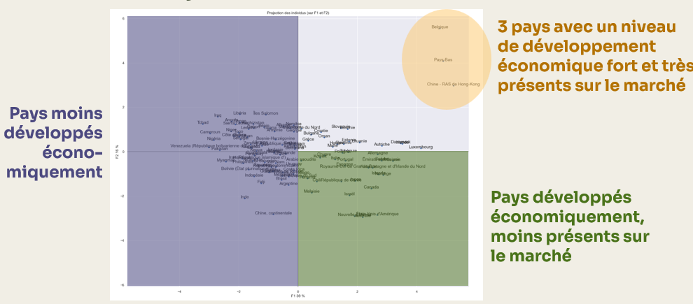

Etude de marché pour développement à l’international
python
Jupyter
Machine learning
Formation
Analyse du marché international de la volaille pour définir un pays ou un groupe de pays propice au développement d’une entreprise à l’export.
Contexte
Ce projet a été réalisé dans le cadre de ma formation de Data Analyst chez OpenClassrooms.
Démarche
Critères analysés :
- Score de stabilité politique
- Consommation de viande de volailles (kg/personne/an)
- Taux d’exportation
- Taux de dépendance à l’importation
- Nombre d’habitants
- PIB par habitant
- Indice de performance logistique
- Distance avec la France (en km)
- Score de climat des affaires
Le dataset final après nettoyage et jointures représentent 117 pays et 86% de la population (en 2017).
- Préparation et nettoyage des données
- Extraction des données
- Nettoyage des données
- Analyses univariées
- Etude des corrélations entre variables
- Analyse en composantes principales (ACP)
- Standardisation des données
- Etude de l’éboulis des valeurs propores
- Analyse du cercle des corrélations
- Projection des individus sur les plans factoriels
- Clustering
- K-means
- Classification hiérarchique ascendante (CAH)
- Visualisation et analyse des clusters
- Comparaison des clusters via une matrice de contingence
Résultats
L’analyse a mis en évidence 2 groupes de pays à prioriser pour l’entreprise :
- hubs logistiques (Belgique, Hong-Kong, Pays-Bas) : Zones de transit commercial majeures avec des taux d’exportation et d’importation très importants
- Marché premium à proximité : Pays économiquement stables, proches de la France avec un taux de dépendance aux importations proche de 50%
Une stratégie commerciale différenciée est recommandée en fonction des pays ciblés.
Réalisations
Fonction permettant d’afficher la projection des individus k
#Fonction permettant d'afficher la projection des individus
def display_factorial_planes( X_projected,
x_y,
pca=None,
labels = None,
clusters=None,
alpha=1,
figsize=[10,8],
marker="." ):
"""
Affiche la projection des individus
Positional arguments :
-------------------------------------
X_projected : np.array, pd.DataFrame, list of list : la matrice des points projetés
x_y : list ou tuple : le couple x,y des plans à afficher, exemple [0,1] pour F1, F2
Optional arguments :
-------------------------------------
pca : sklearn.decomposition.PCA : un objet PCA qui a été fit, cela nous permettra d'afficher la variance de chaque composante, default = None
labels : list ou tuple : les labels des individus à projeter, default = None
clusters : list ou tuple : la liste des clusters auquel appartient chaque individu, default = None
alpha : float in [0,1] : paramètre de transparence, 0=100% transparent, 1=0% transparent, default = 1
figsize : list ou tuple : couple width, height qui définit la taille de la figure en inches, default = [10,8]
marker : str : le type de marker utilisé pour représenter les individus, points croix etc etc, default = "."
"""
# Transforme X_projected en np.array
X_ = np.array(X_projected)
# On gère les labels
if labels is None :
labels = []
try :
len(labels)
except Exception as e :
raise e
# On vérifie la variable axis
if not len(x_y) ==2 :
raise AttributeError("2 axes sont demandées")
if max(x_y )>= X_.shape[1] :
raise AttributeError("la variable axis n'est pas bonne")
# on définit x et y
x, y = x_y
# Initialisation de la figure
fig, ax = plt.subplots(1, 1, figsize=figsize)
# On vérifie s'il y a des clusters ou non
c = None if clusters is None else clusters
# Les points
# plt.scatter( X_[:, x], X_[:, y], alpha=alpha,
# c=c, cmap="Set1", marker=marker)
sns.scatterplot(data=None, x=X_[:, x], y=X_[:, y], hue=c)
# Si la variable pca a été fournie, on peut calculer le % de variance de chaque axe
if pca :
v1 = str(round(100*pca.explained_variance_ratio_[x])) + " %"
v2 = str(round(100*pca.explained_variance_ratio_[y])) + " %"
else :
v1=v2= ''
# Nom des axes, avec le pourcentage d'inertie expliqué
ax.set_xlabel(f'F{x+1} {v1}')
ax.set_ylabel(f'F{y+1} {v2}')
# Valeur x max et y max
x_max = np.abs(X_[:, x]).max() *1.1
y_max = np.abs(X_[:, y]).max() *1.1
# On borne x et y
ax.set_xlim(left=-x_max, right=x_max)
ax.set_ylim(bottom= -y_max, top=y_max)
# Affichage des lignes horizontales et verticales
plt.plot([-x_max, x_max], [0, 0], color='grey', alpha=0.8)
plt.plot([0,0], [-y_max, y_max], color='grey', alpha=0.8)
# Affichage des labels des points
if len(labels) :
for i,(_x,_y) in enumerate(X_[:,[x,y]]):
plt.text(_x, _y+0.05, labels[i], fontsize='14', ha='center',va='center')
# Titre et display
plt.title(f"Projection des individus (sur F{x+1} et F{y+1})")
plt.show()
Stack
python · Jupyter · Machine Learning
Voir le projet complet sur GitHub →
Retour à la liste de projets →